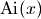
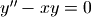
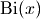

Hypergeometric functions, Bessel/Airy, orthogonal polynomials¶
Bessel functions (jv(), j0(), j1())¶
- mpmath.functions.jv(*args, **kwargs)¶
jv(n,x) computes the Bessel function of the first kind
 . Bessel functions of the first kind are defined as
solutions of the differential equation
. Bessel functions of the first kind are defined as
solutions of the differential equation
which appears, among other things, when solving the radial part of Laplace’s equation in cylindrical coordinates. This equation has two solutions for given
 , where the
, where the
 -function is the solution that is nonsingular at
-function is the solution that is nonsingular at  .
For positive integer , behaves roughly like a sine
(odd ) or cosine (even ) multiplied by a magnitude factor
that decays slowly as
.
For positive integer , behaves roughly like a sine
(odd ) or cosine (even ) multiplied by a magnitude factor
that decays slowly as  .
.Generally,
is a special case of the hypergeometric
function  :
:
Examples
Evaluation is supported for arbitrary arguments, and at arbitrary precision:
>>> from mpmath import * >>> mp.dps = 15 >>> print jv(2, 1000) -0.024777229528606 >>> print jv(4, 0.75) 0.000801070086542314 >>> print jv(2, 1000j) (-2.48071721019185e+432 + 0.0j) >>> mp.dps = 25 >>> print jv(0.75j, 3+4j) (-2.778118364828153309919653 - 1.5863603889018621585533j) >>> mp.dps = 50 >>> print jv(1, pi) 0.28461534317975275734531059968613140570981118184947
The Bessel functions of the first kind satisfy simple symmetries around
:>>> mp.dps = 15 >>> nprint([jv(n,0) for n in range(5)]) [1.0, 0.0, 0.0, 0.0, 0.0] >>> nprint([jv(n,pi) for n in range(5)]) [-0.304242, 0.284615, 0.485434, 0.333458, 0.151425] >>> nprint([jv(n,-pi) for n in range(5)]) [-0.304242, -0.284615, 0.485434, -0.333458, 0.151425]
Roots of Bessel functions are often used:
>>> nprint([findroot(j0, k) for k in [2, 5, 8, 11, 14]]) [2.40483, 5.52008, 8.65373, 11.7915, 14.9309] >>> nprint([findroot(j1, k) for k in [3, 7, 10, 13, 16]]) [3.83171, 7.01559, 10.1735, 13.3237, 16.4706]
The roots are not periodic, but the distance between successive roots asymptotically approaches
 . Bessel functions of
the first kind have the following normalization:
. Bessel functions of
the first kind have the following normalization:>>> print quadosc(j0, [0, inf], period=2*pi) 1.0 >>> print quadosc(j1, [0, inf], period=2*pi) 1.0
For
 or
or  , the Bessel function reduces to a
trigonometric function:
, the Bessel function reduces to a
trigonometric function:>>> x = 10 >>> print jv(0.5, x), sqrt(2/(pi*x))*sin(x) -0.13726373575505 -0.13726373575505 >>> print jv(-0.5, x), sqrt(2/(pi*x))*cos(x) -0.211708866331398 -0.211708866331398
- mpmath.functions.j0(x)¶
- Computes the Bessel function
 . See jv().
. See jv().
- mpmath.functions.j1(x)¶
- Computes the Bessel function
 . See jv().
. See jv().
Airy functions (airyai(), airybi())¶
- mpmath.functions.airyai(*args, **kwargs)¶
Computes the Airy function , which is a solution of the Airy differential equation . The Ai-function behaves roughly like a slowly decaying sine wave for
 and like a decreasing exponential for
and like a decreasing exponential for
 .
.Limits and values include:
>>> from mpmath import * >>> mp.dps = 15 >>> print airyai(0), 1/(3**(2/3.)*gamma(2/3.)) 0.355028053887817 0.355028053887817 >>> print airyai(1) 0.135292416312881 >>> print airyai(-1) 0.535560883292352 >>> print airyai(inf) 0.0 >>> print airyai(-inf) 0.0
airyai() uses a series expansion around
,
so it is slow for extremely large arguments. Here are
some evaluations for moderately large arguments:>>> print airyai(-100) 0.176753393239553 >>> print airyai(100) 2.63448215208818e-291 >>> print airyai(50+50j) (-5.31790195707456e-68 - 1.16358800377071e-67j) >>> print airyai(-50+50j) (1.04124253736317e+158 + 3.3475255449236e+157j)
The first negative root is:
>>> print findroot(airyai, -2) -2.33810741045977
We can verify the differential equation:
>>> for x in [-3.4, 0, 2.5, 1+2j]: ... print abs(diff(airyai, x, 2) - x*airyai(x)) < eps ... True True True True
The Taylor series expansion around
starts with
the following coefficients (note that every third term
is zero):>>> nprint(chop(taylor(airyai, 0, 5))) [0.355028, -0.258819, 0.0, 5.91713e-2, -2.15683e-2, 0.0]
The Airy functions are a special case of Bessel functions. For
, we have:>>> x = 3 >>> print airyai(-x) -0.378814293677658 >>> p = 2*(x**1.5)/3 >>> print sqrt(x)*(jv(1/3.,p) + jv(-1/3.,p))/3 -0.378814293677658
- mpmath.functions.airybi(*args, **kwargs)¶
Computes the Airy function , which is a solution of the Airy differential equation . The Bi-function behaves roughly like a slowly decaying sine wave for
and like an increasing exponential
for .Limits and values include:
>>> from mpmath import * >>> mp.dps = 15 >>> print airybi(0), 1/(3**(1/6.)*gamma(2/3.)) 0.614926627446001 0.614926627446001 >>> print airybi(1) 1.20742359495287 >>> print airybi(-1) 0.103997389496945 >>> print airybi(inf) +inf >>> print airybi(-inf) 0.0
airyai() uses a series expansion around
,
so it is slow for extremely large arguments. Here are
some evaluations for moderately large arguments:>>> print airybi(-100) 0.0242738876801601 >>> print airybi(100) 6.0412239966702e+288 >>> print airybi(50+50j) (-5.32207626732144e+63 + 1.47845029116524e+65j) >>> print airybi(-50+50j) (-3.3475255449236e+157 + 1.04124253736317e+158j)
The first negative root is:
>>> print findroot(airybi, -1) -1.17371322270913
We can verify the differential equation:
>>> for x in [-3.4, 0, 2.5, 1+2j]: ... print abs(diff(airybi, x, 2) - x*airybi(x)) < eps ... True True True True
The Taylor series expansion around
starts with
the following coefficients (note that every third term
is zero):>>> nprint(chop(taylor(airybi, 0, 5))) [0.614927, 0.448288, 0.0, 0.102488, 3.73574e-2, 0.0]
The Airy functions are a special case of Bessel functions. For
, we have:>>> x = 3 >>> print airybi(-x) -0.198289626374927 >>> p = 2*(x**1.5)/3 >>> print sqrt(x/3)*(jv(-1/3.,p) - jv(1/3.,p)) -0.198289626374926
Orthogonal polynomials (jacobi(), legendre(), chebyt(), chebyu())¶
- mpmath.functions.jacobi(*args, **kwargs)¶
jacobi(n, a, b, x) evaluates the Jacobi polynomial
 . The Jacobi polynomials are a special
case of the hypergeometric function
. The Jacobi polynomials are a special
case of the hypergeometric function  given by:
given by:
Note that this definition generalizes to nonintegral values of
. When is an integer, the hypergeometric series
terminates after a finite number of terms, giving
a polynomial in  .
.Evaluation of Jacobi polynomials
A special evaluation is
 :
:>>> from mpmath import * >>> mp.dps = 15 >>> print jacobi(4, 0.5, 0.25, 1) 2.4609375 >>> print binomial(4+0.5, 4) 2.4609375
A Jacobi polynomial of degree
is equal to its
Taylor polynomial of degree . The explicit
coefficients of Jacobi polynomials can therefore
be recovered easily using taylor():>>> for n in range(5): ... nprint(taylor(lambda x: jacobi(n,1,2,x), 0, n)) ... [1.0] [-0.5, 2.5] [-0.75, -1.5, 5.25] [0.5, -3.5, -3.5, 10.5] [0.625, 2.5, -11.25, -7.5, 20.625]
For nonintegral
, the Jacobi “polynomial” is no longer
a polynomial:>>> nprint(taylor(lambda x: jacobi(0.5,1,2,x), 0, 4)) [0.309983, 1.84119, -1.26933, 1.26699, -1.34808]
Orthogonality
The Jacobi polynomials are orthogonal on the interval
![[-1, 1]](../_images/math/5c3818b9565a33fd3aadba10026d32c5e3eea90f.png) with respect to the weight function
with respect to the weight function
 . That is,
. That is,
 integrates to
zero if
integrates to
zero if  and to a nonzero number if
and to a nonzero number if  .
.The orthogonality is easy to verify using numerical quadrature:
>>> P = jacobi >>> f = lambda x: (1-x)**a * (1+x)**b * P(m,a,b,x) * P(n,a,b,x) >>> a = 2 >>> b = 3 >>> m, n = 3, 4 >>> nprint(quad(f, [-1, 1]), 1) 4.0e-23 >>> m, n = 4, 4 >>> print quad(f, [-1, 1]) 1.9047619047619
Differential equation
The Jacobi polynomials are solutions of the differential equation

We can verify that jacobi() approximately satisfies this equation:
>>> from mpmath import * >>> mp.dps = 15 >>> a = 2.5 >>> b = 4 >>> n = 3 >>> y = lambda x: jacobi(n,a,b,x) >>> x = pi >>> A0 = n*(n+a+b+1)*y(x) >>> A1 = (b-a-(a+b+2)*x)*diff(y,x) >>> A2 = (1-x**2)*diff(y,x,2) >>> nprint(A2 + A1 + A0, 1) 4.0e-12
The difference of order
 is as close to zero as
it could be at 15-digit working precision, since the terms
are large:
is as close to zero as
it could be at 15-digit working precision, since the terms
are large:>>> print A0, A1, A2 26560.2328981879 -21503.7641037294 -5056.46879445852
- mpmath.functions.legendre(*args, **kwargs)¶
legendre(n, x) evaluates the Legendre polynomial
 .
The Legendre polynomials are given by the formula
.
The Legendre polynomials are given by the formula
Alternatively, they can be computed recursively using

A third definition is in terms of the hypergeometric function
, whereby they can be generalized to arbitrary :
Basic evaluation
The Legendre polynomials assume fixed values at the points
 and
and  :
:>>> from mpmath import * >>> mp.dps = 15 >>> nprint([legendre(n, 1) for n in range(6)]) [1.0, 1.0, 1.0, 1.0, 1.0, 1.0] >>> nprint([legendre(n, -1) for n in range(6)]) [1.0, -1.0, 1.0, -1.0, 1.0, -1.0]
The coefficients of Legendre polynomials can be recovered using degree-
Taylor expansion:>>> for n in range(5): ... nprint(chop(taylor(lambda x: legendre(n, x), 0, n))) ... [1.0] [0.0, 1.0] [-0.5, 0.0, 1.5] [0.0, -1.5, 0.0, 2.5] [0.375, 0.0, -3.75, 0.0, 4.375]
The roots of Legendre polynomials are located symmetrically on the interval
:>>> for n in range(5): ... nprint(polyroots(taylor(lambda x: legendre(n, x), 0, n)[::-1])) ... [] [0.0] [-0.57735, 0.57735] [-0.774597, 0.0, 0.774597] [-0.861136, -0.339981, 0.339981, 0.861136]
An example of an evaluation for arbitrary
:>>> print legendre(0.75, 2+4j) (1.94952805264875 + 2.1071073099422j)
Orthogonality
The Legendre polynomials are orthogonal on
with respect
to the trivial weight  . That is,
. That is,  integrates to zero if and to
integrates to zero if and to  if :
if :>>> m, n = 3, 4 >>> print quad(lambda x: legendre(m,x)*legendre(n,x), [-1, 1]) 0.0 >>> m, n = 4, 4 >>> print quad(lambda x: legendre(m,x)*legendre(n,x), [-1, 1]) 0.222222222222222
Differential equation
The Legendre polynomials satisfy the differential equation

We can verify this numerically:
>>> n = 3.6 >>> x = 0.73 >>> P = legendre >>> A = diff(lambda t: (1-t**2)*diff(lambda u: P(n,u), t), x) >>> B = n*(n+1)*P(n,x) >>> nprint(A+B,1) 9.0e-16
- mpmath.functions.chebyt(*args, **kwargs)¶
chebyt(n, x) evaluates the Chebyshev polynomial of the first kind
 , defined by the identity
, defined by the identity
The Chebyshev polynomials of the first kind are a special case of the Jacobi polynomials, and by extension of the hypergeometric function
. They can thus also be
evaluated for nonintegral .Basic evaluation
The coefficients of the
-th polynomial can be recovered
using using degree- Taylor expansion:>>> from mpmath import * >>> mp.dps = 15 >>> for n in range(5): ... nprint(chop(taylor(lambda x: chebyt(n, x), 0, n))) ... [1.0] [0.0, 1.0] [-1.0, 0.0, 2.0] [0.0, -3.0, 0.0, 4.0] [1.0, 0.0, -8.0, 0.0, 8.0]
Orthogonality
The Chebyshev polynomials of the first kind are orthogonal on the interval
with respect to the weight
function  :
:>>> f = lambda x: chebyt(m,x)*chebyt(n,x)/sqrt(1-x**2) >>> m, n = 3, 4 >>> nprint(quad(f, [-1, 1]),1) 0.0 >>> m, n = 4, 4 >>> print quad(f, [-1, 1]) 1.57079632596448
- mpmath.functions.chebyu(*args, **kwargs)¶
chebyu(n, x) evaluates the Chebyshev polynomial of the second kind
 , defined by the identity
, defined by the identity
The Chebyshev polynomials of the second kind are a special case of the Jacobi polynomials, and by extension of the hypergeometric function
. They can thus also be
evaluated for nonintegral .Basic evaluation
The coefficients of the
-th polynomial can be recovered
using using degree- Taylor expansion:>>> from mpmath import * >>> mp.dps = 15 >>> for n in range(5): ... nprint(chop(taylor(lambda x: chebyu(n, x), 0, n))) ... [1.0] [0.0, 2.0] [-1.0, 0.0, 4.0] [0.0, -4.0, 0.0, 8.0] [1.0, 0.0, -12.0, 0.0, 16.0]
Orthogonality
The Chebyshev polynomials of the second kind are orthogonal on the interval
with respect to the weight
function  :
:>>> f = lambda x: chebyu(m,x)*chebyu(n,x)*sqrt(1-x**2) >>> m, n = 3, 4 >>> print quad(f, [-1, 1]) 0.0 >>> m, n = 4, 4 >>> print quad(f, [-1, 1]) 1.5707963267949
Generic hypergeometric series (hyper(), hyp0f1(), hyp1f1(), hyp2f1())¶
- mpmath.functions.hyper(a_s, b_s, z)¶
Evaluates the generalized hypergeometric function

where
 denotes the rising factorial (see rf()).
denotes the rising factorial (see rf()).The parameters lists a_s and b_s may contain integers, real numbers, complex numbers, as well as exact fractions given in the form of tuples
 . hyper() is optimized to handle
integers and fractions more efficiently than arbitrary
floating-point parameters (since rational parameters are by
far the most common).
. hyper() is optimized to handle
integers and fractions more efficiently than arbitrary
floating-point parameters (since rational parameters are by
far the most common).Examples
We can compare the output of hyper() with nsum():
>>> from mpmath import * >>> mp.dps = 25 >>> a,b,c,d = 2,3,4,5 >>> x = 0.25 >>> print hyper([a,b],[c,d],x) 1.078903941164934876086237 >>> fn = lambda n: rf(a,n)*rf(b,n)/rf(c,n)/rf(d,n)*x**n/fac(n) >>> print nsum(fn, [0, inf]) 1.078903941164934876086237
The parameters can be any combination of integers, fractions, floats and complex numbers:
>>> a, b, c, d, e = 1, (-1,2), pi, 3+4j, (2,3) >>> x = 0.2j >>> print hyper([a,b],[c,d,e],x) (0.9923571616434024810831887 - 0.005753848733883879742993122j) >>> b, e = -0.5, mpf(2)/3 >>> fn = lambda n: rf(a,n)*rf(b,n)/rf(c,n)/rf(d,n)/rf(e,n)*x**n/fac(n) >>> print nsum(fn, [0, inf]) (0.9923571616434024810831887 - 0.005753848733883879742993122j)
- mpmath.functions.hyp0f1(a, z)¶
- Hypergeometric function . hyp0f1(a,z) is equivalent
to hyper([],[a],z); see documentation for hyper() for more
information.
- mpmath.functions.hyp1f1(a, b, z)¶
- Hypergeometric function
 . hyp1f1(a,b,z) is equivalent
to hyper([a],[b],z); see documentation for hyper() for more
information.
. hyp1f1(a,b,z) is equivalent
to hyper([a],[b],z); see documentation for hyper() for more
information.
- mpmath.functions.hyp2f1(a, b, c, z)¶
- Hypergeometric function . hyp2f1(a,b,c,z) is equivalent
to hyper([a,b],[c],z); see documentation for hyper() for more
information.